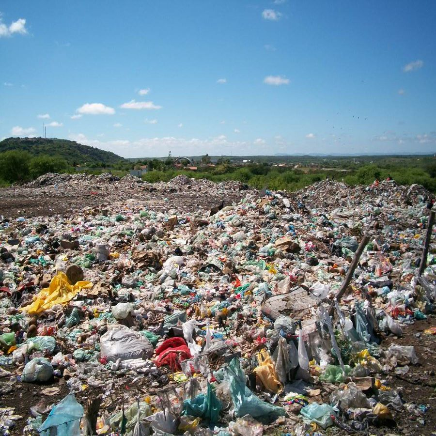
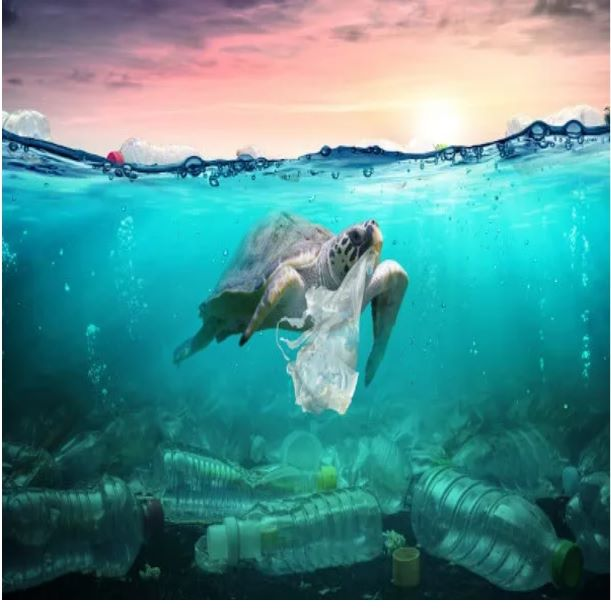

INDÚSTRIAS E O MEIO AMBIENTE
É possível equilibrar os dois?
A importância das indústrias para a nossa sociedade é algo indiscutível, no entanto, quando deixam de lado a preocupação ambiental, podem causar grandes impactos, principalmente na natureza, por isso o relacionamento entre a indústria e o meio ambiente deve ser estabelecido de uma forma muito transparente para a sociedade e, principalmente, estabelecido com o objetivo de promover o desenvolvimento sustentável. Para o futuro é previsto uma agenda integrada dos países com o objetivo de promover um desenvolvimento sustentável. É uma agenda denominada de Agenda 2030 e os objetivos do desenvolvimento sustentável (ODS) são apresentados em uma plataforma digital.
Mais detalhes sobre a agenda 2030 aqui
Os processos de transformação utilizados pela indústrias diariamente causam impactos ambientais, poluem o ar, o solo e a água, por isso ações de sustentabilidade devem ser tomadas para que esse impacto seja, no mínimo, reduzido e controlado.


SEGUNDA PARTE